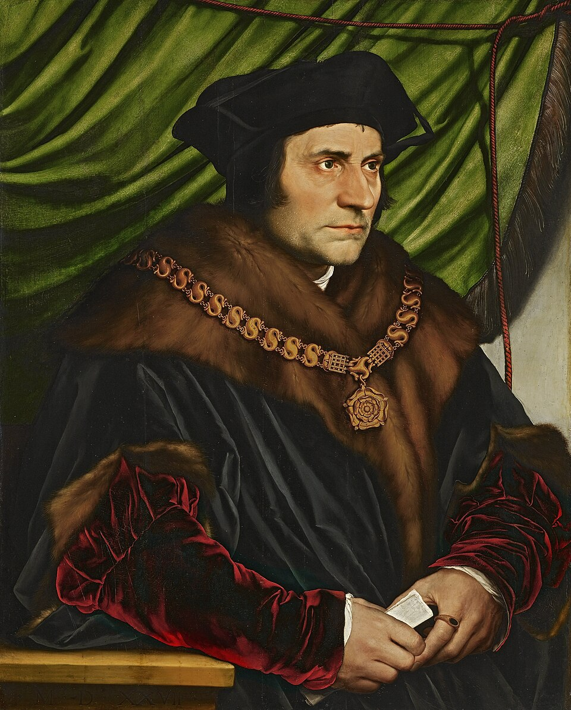
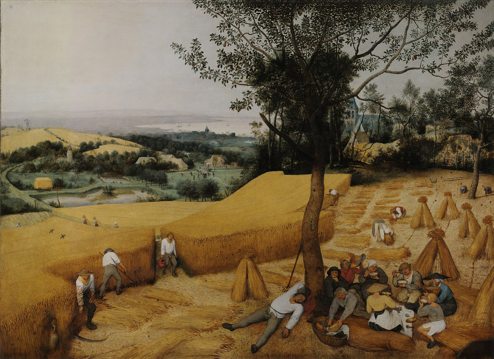
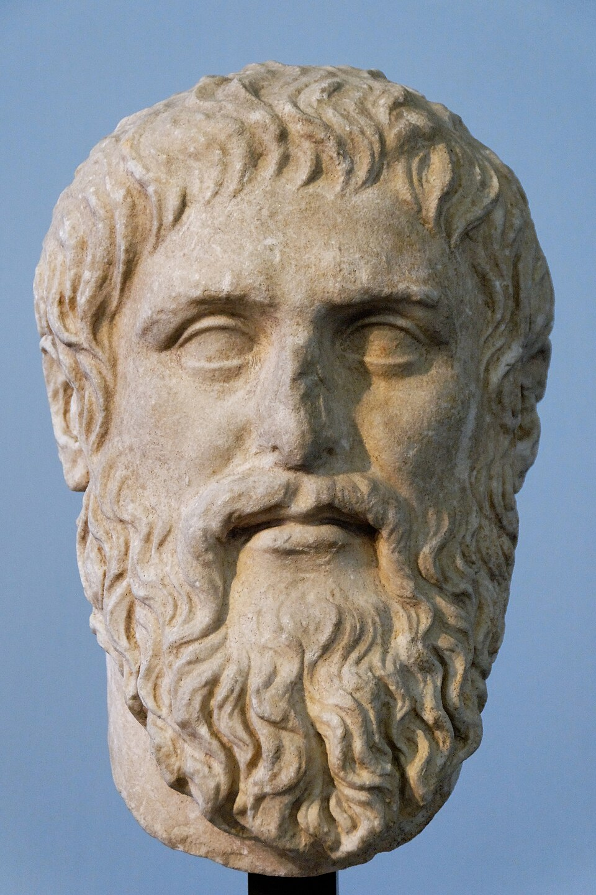
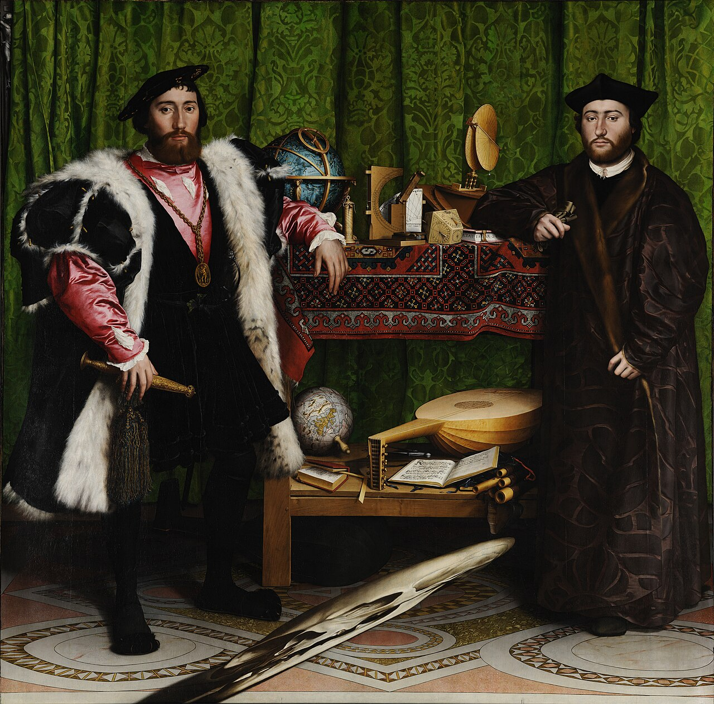
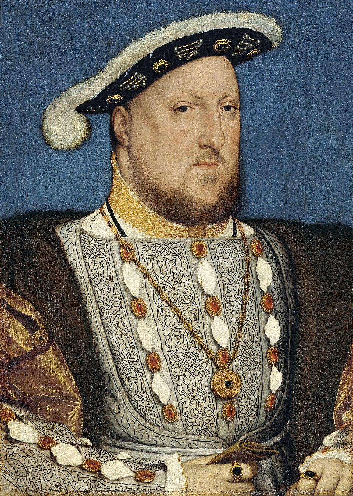
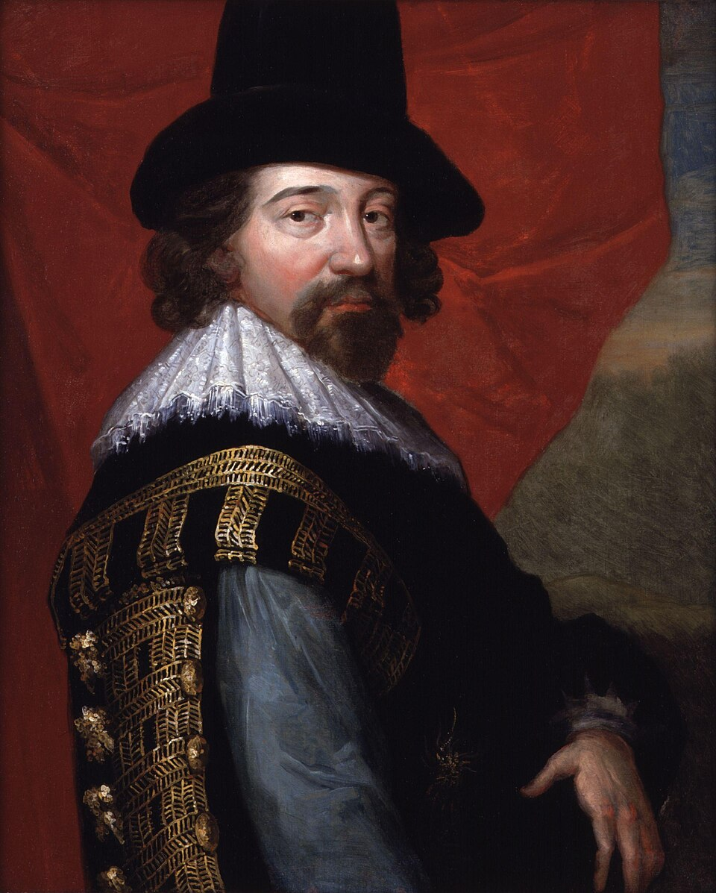

UTOPIA
Une présentation en 7 voix
Un mot, deux sens
le lieu qui n'existe pas
le lieu du bonheur
« C'est une utopie ! »
le compliment
la moquerie
L'homme derrière l'île

More et Érasme

L'histoire en trois étapes
Le rêve avant le diagnostic
en Flandre, 1515
à Londres, 1516
Notre question
Du constat au rêve
Un dîner chez le cardinal
« On pend les voleurs ! »
L'exemple des Polylérites
Les moutons mangent les hommes

Même les abbés !
chassent eux aussi les paysans
beaucoup de moutons… et des prix qui montent quand même
La racine du mal
Platon, déjà

Utopus coupe le cordon
54 villes jumelles
Une économie sans propriété
Ni argent, ni oisiveté
conférences, lecture, jeux éducatifs
chacun prend selon ses besoins
si bons qu'on préfère y être soigné
L'or aux toilettes
Bijoux ? Jouets d'enfants !

Holbein, Les Ambassadeurs (1533)couverts d'or… pris pour des bouffons
des jouets pour les petits enfants
Le plaisir raisonnable
Le tableau miroir
Un idéal ambigu
Hythlodée contre Morus
« Pas de compromis avec les rois »
« Faire le moins de mal possible »
Le dilemme de More

Vrai ou faux ?
L'affaire du pont
Des noms qui avouent tout
Le prince sans peuple
= « sans peuple »
« Ce n'est pas moi qui le dis, c'est lui ! »
Une île fermée
Des habitants qu'on déplace
Tous pareils, tout le temps
Libre de bien faire ?
Les oubliés du paradis
Pacifiques… mais pas gentils
sur les terres jugées « vides »
on paie d'autres pour se battre
les chefs ennemis sont visés
Attention à l'anachronisme
Rêveur, humoriste ou prudent ?
Portée et actualité
Cinq siècles d'utopies
Le Soleil et l'Atlantide
7 murailles peintes, imaginées en prison

une île dirigée par des savants
L'utopie sort des livres
vivre et travailler ensemble
un vrai village… qui échoue
un ancêtre du socialisme
Le XXe siècle déchante
des numéros, des maisons de verre
le bonheur en pilule
Big Brother vous regarde
Mêmes ingrédients, autre recette
Popper : pas de plan parfait
la société parfaite, d'un seul coup
corriger les injustices une par une
Utopia, version 2026
1516 : 6 h de travail
1516 : prévenir le vol
1516 : l'or méprisé
Hier utopie, aujourd'hui réalité
Notre parcours
l'île répond aux maux de l'Europe
le récit nous invite à douter
le doute traverse les siècles